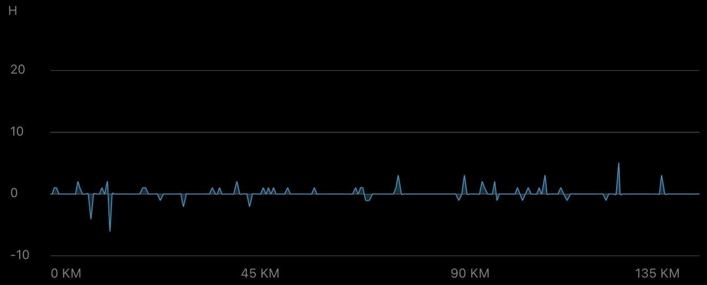

Daily Stats*
| Distance |
137.4 km |
| Time |
07:17:44 h |
| Avg. Speed |
18.8 km/h |
| Max. Speed |
37.4 km/h |
| Avg. Heart Rate |
124 bpm |
| Uphill |
338 m |
| Downhill |
300 m |
| Avg. Temperature** |
23.0 °C |
 Elevation profile [m]
Elevation profile [m]

Slope profile [%]
*measured by Garmin Forerunner 945 & Sigma ROX 4.0
**measured at the lower back
Daybook
With some delay, here's my post about leg 8 of this year's cycling tour. The weekend break, where I opted out of blogging, and the longer distance covered yesterday, which made me arrive later than usual, are to "blame" for this. Anyway, to compensate, I'm writing a more detailed post today with more impressions than normal ;-)
However, before I comment on yesterday's route, I would first like to report on the events of the weekend (first five impressions). On Friday evening I arrived in Schiedam, and after a welcoming chat with my friends Pia and Robert, a mutual sniffing session with Momo (the cat), a (well needed) shower, and a short post-training recovery on the fascia roller, we ended the evening with a visit to a restaurant (I had "Navratan Pulao") and a walk along the windmills. Schiedam is currently decked out with decorations to mark its 750th anniversary, and as I also learned, the windmills there dominate the global charts of the largest windmills! Still not sure how far the mills actually extend into the ground @Robert ;-)
The next day, we kicked things off at a relaxed pace. It was mostly cloudy with temperatures around 20°C, and the sun only sometimes burst through, yet there was no rain. My legs felt also felt a little heavier than normal, but I had no muscle soreness or other muscular problems :-) At noon, we got on our bikes and rode to Delft. There we strolled through the market and grabbed a snack/drink, then continued to The Hague (Den Haag), where we visited the Binnenhof (historic government building) and finally had a view of the open sea at Scheveningen strand. To me, a setting like this always has a really calming effect, like arriving at one's haven of peace where time stands still! After walking a few meters across the sand near the water's edge, we made our way to the train station and returned to Schiedam.
On Sunday, the weather stayed pretty much the same, which was fine for our planned tour of Rotterdam. We took a boat to the Erasmusbrug, from where we walked along the harbor toward the Markthal (market hall). Passing the yellow cube houses and the central library, we arrived just before opening time and walked through the aisles, with food stalls on the right and left. Refreshed at "Sherlock's Place", we continued through the pedestrian zone, on to the art depot, and approached "Het Park", where the Euromast is located, which offers a great view of Rotterdam. It was a great day trip to get an impression of the city. Thanks to Pia and Robert for planning, it was a lot of fun :-) Unfortunately, this was also the end of the weekend ...
Monday morning, I set off on my bike early (just before 9 am), after two police officers stopped briefly next to me and asked where today's tour (second five impressions) would take me (well, they seemed surprised when I replied "Antwerp" :-) ). It was still cloudy, with relatively little wind, so I quickly headed past the harbor area of Schiedam. There was roadwork going on, but via a dedicated lane, which was signposted as a detour, I managed to cross the water via the Benelux tunnel, through Pernis and on to Hoogvliet. Just before Spijkenisse, I had to take a ferry, as the Spijkenisserbrug was closed for repairs. However, it was a short crossing, only around 5 min, so I quickly got back on my bike.
The next 20 km were then mostly rural, flat stretches with some straights ranging from 1 to 5 km in length. As the wind increased slightly, I rode through Zuidland, Oudenhoorn, and Hellevoetsluis to the Haringvlietdam to cross the Deltageul, and entered the province of Zeeland. A first longer break at the Deltageul offered some breathing space, and it was lovely to just watch the local nature with its mixture of land and water.
Over dykes and dams, through villages and surrounded by wind turbines, I continued my journey through the island landscape. In Herkingen, I stocked up on supplies a little, then headed over the Philipsdam over the Krammer (the largest community wind farm in the Netherlands). It was really enjoyable cycling there, with good sightlines, still moderate weather, and so much natural diversity all around me!
Oud-Vossemeer (including an extra mile due to road closures for construction work), Tholen and Halsteren then brought me to Bergen op Zoom. By then, I'd ridden almost 90 km, and as nice as it was, the sun was starting to take its toll. I didn't feel tired, and the sun wasn't a problem either, but I was starting to feel the urge to go to the toilet and hoped that the remaining 45 km would pass quickly ...
Beyond Bergen op Zoom, the landscape became more wooded and densely forested, and Belgium slowly introduced itself. Everything seemed to change again: the roads, the houses, the bike paths, the vegetation — the Netherlands stayed behind me bit by bit. This was officially confirmed in Putte, where I set foot on Belgian territory. The cycle path followed the railway tracks deeper into the suburbs of Antwerp, through the city center, and finally, after a little over seven hours of cycling, to my destination! Thanks to supercompensation and stress management through economical riding / sufficient breaks, I wasn't too exhausted, but the toilet was immediately "desecrated" ;-)
Zeeland was largely easy to cycle through and inspired me to marvel at the surroundings. Highly recommended, and under these external conditions, it can be done with little effort. If you ever have the opportunity, visit one of the strands there and maybe ride around the other islands too! I really enjoyed it :-)
In Antwerp, known as the center of the global diamond trade (84% of the world's raw diamonds and over half of the polished ones are traded in Antwerp's diamond district at four diamond markets), I spent another day off today. I'll share my impressions of the city in my next post. Until then, have a good trip, wherever it takes you!
Impressions
Stadhuis (Town hall) Delft
Mosaic map of Delft
Panoramic view from Scheveningen strand to "De Pier" (near Den Haag)
Yellow cube houses in Rotterdam
A view of Rotterdam from the Euromast
Ferry crossing at the Spijkenisserbrug
"Buitendijks traject" behind Battenoord with the Battenoert wind farm in front
Watertoren (water tower) in Bergen op Zoom
Beautiful road from Bergen op Zoom to Putte
Crossing the border to Belgium in Putte